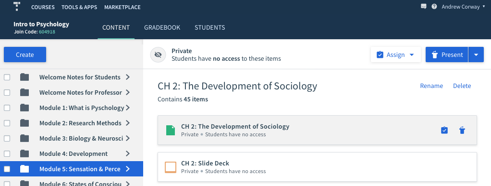

Top Hat has an innovative online textbook offering within their platform. However, they weren't competitive enough with traditional textbooks, as professors expect to receive additional content along with their textbook. The textbooks were also hard to sell along with the Top Hat platform, since it didn't fit in seamlessly with the courses. The idea was to stop selling textbooks and start selling full course solutions using the Before, During, and After Class framework. In the end, this product increased our sales win rate of these textbooks from 10% to 20%. You can see the final product video with my designs in action below!
The content team assembled a few weeks worth of content in the new format to pitch to professors and get them to review. Upon putting this amount of content into a course, it became apparent that Top Hat's existing navigation was not designed to handle large amounts of content. Although the users liked the content, they found it very difficult to navigate, and they weren't grasping the BDA setup in its current form. It became clear that in order to sell the Intro Course, we would have to make product changes.
In order to see whether professors identified with the BDA framework and data insights when they're presented clearly, I quickly came up with a blue sky design of what a Top Hat course could look like if designed specifically for the Intro Course use case. We presented this to users during interviews to gauge their response. With this, instructors were able to describe how they would use this data and framework to teach their course and responded very positively to it!
From our user research, it seemed that having a place where instructors could see and interact with all the content for a module was important. We liked to call it the "Module Lobby". To continue to test this theory, the user research team wanted to present more blue sky designs to users, so I came up with the following:
Once the concept of the module lobby was validated, I needed to figure out how this, along with the BDA framework, could be built into the platform. I also wanted to solve this problem in a way that would benefit the majority of our users who are not Intro Course adopters.
I decided to utilize folders. If each module is a different folder, subfolders called Before Class, During Class, and After Class can be used to organize the content. The folder preview area can be utilized to show the Module's content in the BDA framework, and provide all instructors with new functionality.
The old folder preview area was pretty useless. When you select the folder from the content tree, the folder's contents are listed on the right. You cannot click on them or perform any actions.
In my redesign, I clearly display the nested folder and contents. The user can navigate to any of these items from here, as well as assign or present them, making performing actions much quicker.
If the folder doesn't contain any subfolders, the items are just listed like so.
The user can also quickly assign or present an item by hovering over the item and clicking on the assign or present icons that appear.
Previously, folders in the content tree were all expanded by default. When there's dozens of folders, this is an extremely poor experience. For many of our users who have lots of content, this made the tree very difficult to navigate. Users had to manually collapse the folders.
I proposed changing this so that folders are collapsed by default on each new session. With the new folder preview pane, users can click on the folder, and use the pane to navigate. The pane gives the user much more visibility into their content, rather than the constrained area of the content tree. If they do want to expand the content tree still, they can do so by clicking on the chevrons to expand or collapse.
In order for the user to be able to fully navigate using the pane, we had to provide a way for them to return to higher levels. So I added breadcrumbs above the titles. Also, when a user navigates, the content tree expands accordingly, so that the user can see where they are in the context of the full course.
It was decided to manually send professors data via email, rather than within the product for the first iteration. That way, we can validate and quickly iterate on the kind of data being shown to the instructors.
We tested these designs first with internal employees to ensure the new navigation was intuitive, and then tested with professors; both ones who use Top Hat already as well as ones who don't. Overall, the navigation was very intuitive and quick to achieve the user's goals. We further validated the BDA framework by giving professors the Insights Report and attending their classes to observe how it affected their teaching. We also sat in on the sales demos throughout the whole process in order to learn how professors were reacting to our new offering.
The biggest validation that we created a successful offering was that the sales win rate for these textbooks increased from 10% to 20%. They are now one of Top Hat's biggest offerings.